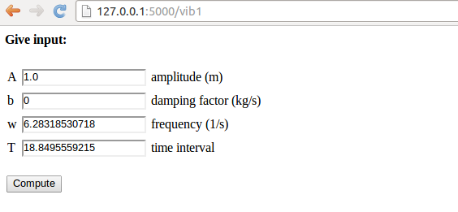

Handling multiple input variables in Flask
The scientific hello world example shows how to work with one input
variable and one output variable. We can easily derive a solution for
a collection of input variables and some corresponding HTML code
as result. Multiple input variables are listed in the InputForm
class using different types for different forms (text field,
float field, integer field, check box field for boolean values, etc.).
The value of these variables will be available in a form object
for computation. It is then a matter of taking the output from the
computation and format the corresponding HTML code for presenting
the result.
We address the task of plotting the function \( u(t)=Ae^{-bt}\sin (wt) \) for \( t\in [0,T] \). The web application must have fields for the numbers \( A \), \( b \), \( w \), and \( T \), and a Compute button, as shown in Figure 4. Filling in values, say \( 0.1 \) for \( b \) and \( 20 \) for \( T \), results in what we see in Figure 5, i.e., a plot of \( u(t) \) is added after the input fields and the Compute button.


Programming the Flask application
The forthcoming text explains the necessary steps to realize a
Flask app that behaves as depicted in Figures 4
and 5. We start with the
compute.py module since it contains only the computation of \( u(t) \)
and the making of the plot, without any interaction with Flask.
More specifically, inside compute.py, we have a function for
evaluating \( u(t) \) and a compute function for making the plot. The
return value is the name of the plot file, which should get a unique
name every time the compute function is called such that the browser
cannot reuse an already cached image. Flask applications must have all
extra files (CSS, images, etc.) in a subdirectory static.
from numpy import exp, cos, linspace
import matplotlib.pyplot as plt
import os, time, glob
def damped_vibrations(t, A, b, w):
return A*exp(-b*t)*cos(w*t)
def compute(A, b, w, T, resolution=500):
"""Return filename of plot of the damped_vibration function."""
t = linspace(0, T, resolution+1)
y = damped_vibrations(t, A, b, w)
plt.figure() # needed to avoid adding curves in plot
plt.plot(t, y)
plt.title('A=%g, b=%g, w=%g' % (A, b, w))
if not os.path.isdir('static'):
os.mkdir('static')
else:
# Remove old plot files
for filename in glob.glob(os.path.join('static', '*.png')):
os.remove(filename)
# Use time since Jan 1, 1970 in filename in order make
# a unique filename that the browser has not chached
plotfile = os.path.join('static', str(time.time()) + '.png')
plt.savefig(plotfile)
return plotfile
if __name__ == '__main__':
print compute(1, 0.1, 1, 20)
We organize the model, view, and controller as three separate
files, as illustrated in
the section Splitting the app into model, view, and controller files. This more complicated app involves
more code and especially the model will soon be handy to isolate in its own
file. Our first version of model.py reads
from wtforms import Form, FloatField, validators
from math import pi
class InputForm(Form):
A = FloatField(
label='amplitude (m)', default=1.0,
validators=[validators.InputRequired()])
b = FloatField(
label='damping factor (kg/s)', default=0,
validators=[validators.InputRequired()])
w = FloatField(
label='frequency (1/s)', default=2*pi,
validators=[validators.InputRequired()])
T = FloatField(
label='time interval (s)', default=18,
validators=[validators.InputRequired()])
As seen, the field classes can take a label argument for a longer
description, here also including the units in which the variable is
measured. It is also possible to add a description argument with
some help message. Furthermore, we include a default value, which
will appear in the text field such that the user does not need to
fill in all values.
The view will of course make use of templates, and we shall experiment
with different templates. Therefore, we allow a command-line argument
to this Flask app for choosing which template we want. The rest of
the view.py file follows much the same set up as for the scientific
hello world app:
from model import InputForm
from flask import Flask, render_template, request
from compute import compute
import sys
try:
template_name = sys.argv[1]
except IndexError:
template_name = 'view0'
app = Flask(__name__)
@app.route('/vib1', methods=['GET', 'POST'])
def index():
form = InputForm(request.form)
if request.method == 'POST' and form.validate():
result = compute(form.A.data, form.b.data,
form.w.data, form.T.data)
else:
result = None
return render_template(template_name + '.html',
form=form, result=result)
The details governing how the web page really looks like lie in the
template file. Since we have several fields and want them nicely
align in a tabular fashion, we place the field name, text areas,
and labels inside an HTML table in our first attempt to write a
template, view0.html:
<form method=post action="">
<table>
{% for field in form %}
<tr>
<td>{{ field.name }}</td><td>{{ field }}</td>
<td>{{ field.label }}</td>
</tr>
{% endfor %}
</table>
<p><input type=submit value=Compute></form></p>
<p>
{% if result != None %}
<img src="{{ result }}" width=500>
{% endif %}
</p>
Observe how easy it is to iterate over the form object and grab data
for each field: field.name is the name of the variable in the
InputForm class, field.label is the full name with units as given
through the label keyword when constructing the field object, and
writing the field object itself generates the text area for
input (i.e., the HTML input form). The control statements we can
use in the template are part of the Jinja2
templating language. For now, the if-test, for-loop and
output of values ({{ object }}) are enough to generate the HTML
code we want.
Recall that the objects we need in the template, like result and form
in the present case, are transferred to the template via keyword
arguments to the render_template function. We can easily pass on
any object in our application to the template.
To get a runnable Flask application it remains to
run the app object from controller.py:
from view import app
if __name__ == '__main__':
app.run(debug=True)
You are encouraged to run python controller.py and load http://127.0.0.1:5000/vib1 into your web browser for testing.